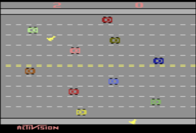
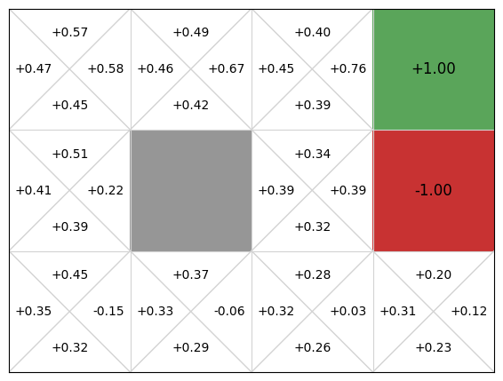
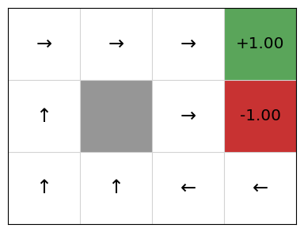
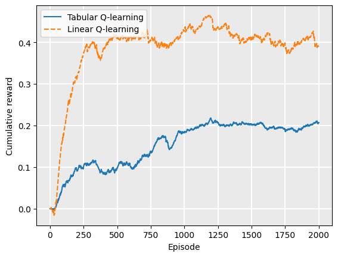
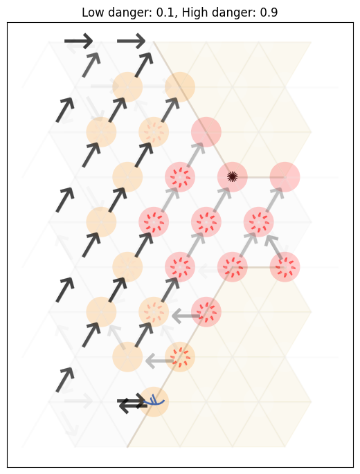

Q-function approximation#
Learning outcomes
The learning outcomes of this chapter are:
Manually apply linear Q-function approximation to solve small-scale MDP problems given some known features.
Select suitable features and design & implement Q-function approximation for model-free reinforcement learning techniques to solve medium-scale MDP problems automatically.
Argue the strengths and weaknesses of function approximation approaches.
Compare and contrast linear Q-learning with deep Q-learning.
Overview#
Using a Q-table has two main limitations:
It requires that we visit every reachable state many times and apply every action many times to get a good estimate of \(Q(s,a)\). Thus, if we never visit a state \(s\), we have no estimate of \(Q(s,a)\), even if we have visited states that are very similar to \(s\).
It requires us to maintain a table of size \(|A| \times |S|\), which is prohibitively large for any non-trivial problem.
To get around these we will look at how to use machine learning to approximate Q-functions. In particular, we will look at linear function approximation and approximation using deep learning (deep Q-learning). Instead of calculating an exact Q-function, we approximate it using simple methods that both eliminate the need for a large Q-table (therefore the methods scale better), and also allowing use to provide reasonable estimates of \(Q(s,a)\) even if we have not applied action \(a\) in state \(s\) previously.
Example — Freeway
Consider the game Freeway, in which a chicken needs to cross several lanes on a freeway without being run over by a car. A screenshot of the game is shown below:

Let us assume that there are 12 rows and about 40 columns. This grossly underestimates the actual number of rows and columns because the cars move a few pixels at a time, not in columns. This means there are 480 different positions that a chicken can be in, and there are two chickens. We also need to record whether there is a car in each location.
This leads to:
There are four actions: left, right, up, down.
A Q-table would need to store \(28\times 10^{149}\) entries. This is a huge Q-table for what is a trivial example compared to many other problems.
Linear Q-learning (Linear Function Approximation)#
The key idea is to approximate the Q-function using a linear combination of features and their weights. Instead of recording everything in detail, we think about what is most important to know, and model that.
What are some features that are relevant to the Freeway example?
The overall process is:
for the states, consider what are the features that determine its representation;
during learning, perform updates based on the weights of features instead of states; and
estimate \(Q(s,a)\) by summing the features and their weights.
Example — Features for Freeway
Instead of recording the position of both chickens and whether there is a car in every position, we just record the following features:
the number of rows each chicken is away from the other side of the road in (two features – one for each chicken); and
how far away the closest car is in the row above and below each chicken (four features — two for each chicken).
This requires just six features.
Linear Q-function Representation#
In linear Q-learning, we store features and weights, not states. What we need to learn is how important each feature is (its weight) for each action.
To represent this, we have two vectors:
A feature vector, \(f(s,a)\), which is a vector of \(n \cdot |A|\) different functions, where \(n\) is the number of state features and \(|A|\) the number of actions. Each function extracts the value of a feature for state-action pair \((s,a)\). We say \(f_i(s,a)\) extracts the \(i\)th feature from the state-action pair \((s,a)\):
\[\begin{split}f(s,a) = \begin{pmatrix} f_1(s,a) \\ f_2(s,a) \\ \ldots\\ f_{n \times |A|}(s,a) \\ \end{pmatrix}\end{split}\]In the Freeway example, we have a vector with six state features times four actions. The function \(f_1(s,Up)\) returns value of the feature that represents the distance chicken 1 is away from the goal. The function \(f_{3}(s, Up)\) returns the distance to the nearest car in the row above the first chicken.
A weight vector \(w\) of size \(n \times |A|\): one weight for each feature-action pair. \(w^a_i\) defines the weight of a feature \(i\) for action \(a\).
Defining State-Action Features#
Often it is easier to just define features for states, rather than state-action pairs. The features are just a vector of \(n\) functions of the form \(f_i(s)\).
However, for most applications, the weight of a feature is related to the action. The weight of being one step away from the end in Freeway is different if we go Up to if we go Right.
It is straightforward to construct \(n \times |A|\) state-pair features from just \(n\) state features:
This effectively results in \(|A|\) different weight vectors:
Q-values from linear Q-functions#
Give a feature vector \(f\) and a weight vector \(w\), the Q-value of a state is a simple linear combination of features and weights:
In practice, we also multiple the feature vector for weights \(w^b_n\) for all actions \(b \neq a\), but as the feature values will be 0, we know that it does not influence the result.
Example — Approximate Q-function computation for Freeway
For the Freeway example, we would assume that moving up would give a better score than moving down, all else equal (that is, if the closest car in the next row up is the same distance away than the closest in the next row down). So, for state \(s\) where the chicken is in row 1:
Linear Q-function Update#
To use approximate Q-functions in reinforcement learning, there are two steps we need to change from the standard algorithms: (1) initialisation; and (2) update.
For initialisation, initialise all weights to 0. Alternatively, you can try Q-function initialisation and assign weights that you think will be “good” weights.
For update, we now need to update the weights instead of the Q-table values. The update rule is now:
\(\quad\quad\) For each state-action feature \(i\)
\(\quad\quad\quad\quad w^a_i \leftarrow w^a_i + \alpha \cdot \delta \cdot \ f_i(s,a)\)
where \(\delta\) depends on which algorithm we are using; e.g. Q-learning, SARSA.
As this is linear, it is therefore convex, so the weights will converge.
Note — Q-value propagation
Note that this has the effect of updating Q-values to states that have never been visited!
In Freeway, for example, if we receive our first reward by crossing the road (going Up from the final row), this will update the weight all features for Up, and now we have a Q-value for going Up from any position on the final row.
Example — Linear Q-function update for Freeway
Assume that all weights are 0, therefore, \(Q(s,a) = 0\) for every state and action. Now, we receive the reward of 10 for getting to the other side of the road. If feature 6 has the value \(\frac{r}{D}\), where \(r\) is the current row and \(D\) is the distance to the other side, then we have:
From this, we now can get an estimate of \(Q(s,Up)\) from any state because we have some weights in our linear function. Those that are closer to the other size of the road will get a higher Q-value than those further away (all other things being equal).
Implementation#
To implement linear function approximation, we implement a new class that inherits from QFunction called LinearQFunction:
import json
from mastering_rl.qfunctions.qfunction import QFunction
class LinearQFunction(QFunction):
def __init__(self, features, alpha=0.1, weights=None, default_q_value=0.0):
self.features = features
self.alpha = alpha
self.default_q_value = default_q_value
if weights == None:
self._initialize_weights()
else:
self.weights = weights
def _initialize_weights(self):
self.weights = [
self.default_q_value
for _ in range(0, self.features.num_actions())
for _ in range(0, self.features.num_features())
]
def update(self, state, action, delta):
# update the weights
feature_values = self.features.extract(state, action)
for i in range(len(self.weights)):
self.weights[i] = self.weights[i] + (self.alpha * delta * feature_values[i])
def get_q_value(self, state, action):
q_value = 0.0
feature_values = self.features.extract(state, action)
for i in range(len(feature_values)):
q_value += feature_values[i] * self.weights[i]
return q_value
def reset(self):
self._initialize_weights()
def save(self, filename):
with open(filename, 'w') as f:
json.dump({'alpha': self.alpha, 'weights': self.weights}, f)
@classmethod
def load(cls, features, filename):
with open(filename, 'r') as f:
data = json.load(f)
return cls(features, alpha=data['alpha'], weights=data['weights'])
A linear Q-function is initialised with either some given weights or with a default weight for all weights. The update method does as outlined [above]((sec:single-agent:q-function-approximation:linear-q-values): updates each weight by adding \(\delta \cdot f_i(s,a)\). Computing the Q-value implements the weighted sum outlined above.
Example: Linear Q-function approximation on Gridworld#
To use on an example, we need a feature extractor. The first thing we need to do is define some features for the task. As discussed above, feature engineering is not always straightforward. However, for the GridWorld task, it is reasonably clear that the distance from the goal cell is important. As such, we define three features here:
The distance from the goal on the X-axis.
The distance from the goal on the Y-axis.
The total distance from the goal as a Manhattan distance.
As noted above, normalising features is important to ensure that they are in the same magnitude. So, given the current position \((x,y)\) as the state, we extract the values of the state features as follows:
\((x(s) + \epsilon) / (x(g) + \epsilon)\).
\((y(s) + \epsilon) / (y(g) + \epsilon)\).
\((x(g) - x(s) + y(g) - y(s) + \epsilon) / (x(g) + y(g) + \epsilon)\).
where \(x(s)\) and \(y(s)\) return the x and y coordinates of the agent respectively, and \(g\) is the goal state. These expressions normalise the feature values to the range \([0,1]\) by dividing by the goal state. The \(\epsilon\) is some small value such as \(0.01\) to ensure two things: (1) that we do not divide by 0 if the goal is at a coordinator where x or y are 0; and (2) that the state (0,0) has a non-zero value, otherwise there will be no Q-value for it.
Then, to extract state-action features, we need to define these as \(f(s,a)\) is defined from \(f(s)\) above.
We can implement these in a feature extractor class:
class FeatureExtractor:
def extract_features(self, state, action):
abstract
from mastering_rl.feature_extractors.feature_extractor import FeatureExtractor
from mastering_rl.markov_decision_processes.gridworld import GridWorld
class GridWorldFeatureExtractor(FeatureExtractor):
def __init__(self, mdp):
self.mdp = mdp
def num_features(self):
return 3
def num_actions(self):
return len(self.mdp.get_actions())
def extract(self, state, action):
goal = (self.mdp.width - 1, self.mdp.height - 1)
x = 0
y = 1
e = 0.01
feature_values = []
for a in self.mdp.get_actions():
if a == action and state != GridWorld.TERMINAL:
feature_values += [(state[x] + e) / (goal[x] + e)]
feature_values += [(state[y] + e) / (goal[y] + e)]
feature_values += [
(goal[x] - state[x] + goal[y] - state[y] + e)
/ (goal[x] + goal[y] + e)
]
else:
for _ in range(0, self.num_features()):
feature_values += [0.0]
return feature_values
Now, we just simply pass this as a feature extractor to our implementation of LinearQFunction, and use this as the Q-function instead of a Q-table:
from mastering_rl.markov_decision_processes.gridworld import GridWorld
from mastering_rl.learners.qlearning import QLearning
from mastering_rl.qfunctions.linear_qfunction import LinearQFunction
from mastering_rl.feature_extractors.gridworld_feature_extractor import GridWorldFeatureExtractor
from mastering_rl.policies.q_policy import QPolicy
from mastering_rl.multi_armed_bandit.epsilon_greedy import EpsilonGreedy
mdp = GridWorld()
features = GridWorldFeatureExtractor(mdp)
qfunction = LinearQFunction(features)
QLearning(mdp, EpsilonGreedy(), qfunction).execute()
policy = QPolicy(qfunction)
mdp.visualise_q_function(qfunction)
mdp.visualise_policy(policy)


We can see that this gives OK Q-values and an OK policy, but there are issues. In particular, if we are in cell (2,1), the policy directs us to go right to the terminal state that gives us a -1 reward!
This is because our linear approximation learns one weight for going right, left, up, and down. Going right at the state \((2,2)\) is clearly good, so the weight will be learnt as positive, but every time an update is performed after the agent transitions from \((2,2)\) to the goal state \((3,2)\), the weight updates the value of \(Q(s, Right)\) for all states \(s\), including the state \((2,1)\). As such, we learn that going right at (2,1) is good when it is not.
The choice of features is key to solving the problem. We have defined features that assume there is just the goal in the top-right corner. However, this does not help us avoid the negative reward.
We can solve this by improving our features using feature engineering. One way is to encode specific features that learn that we are e.g. in state \((2,1)\). Our learning algorithm will then learn that when this feature value is true, going right is a bad move.
However, more of these features we engineer, the more domain knowledge we are encoding into our solution.
A more general to engineering features about specific states is to add two new features that are true (1) if and only if we are in the same column (or row respectively) as the goal:
from mastering_rl.feature_extractors.feature_extractor import FeatureExtractor
from mastering_rl.markov_decision_processes.gridworld import GridWorld
class GridWorldBetterFeatureExtractor(FeatureExtractor):
def __init__(self, mdp):
self.mdp = mdp
def num_features(self):
return 5
def num_actions(self):
return len(self.mdp.get_actions())
def extract(self, state, action):
goal = (self.mdp.width - 1, self.mdp.height - 1)
x = 0
y = 1
e = 0.01
feature_values = []
for a in self.mdp.get_actions():
if a == action and state != GridWorld.TERMINAL:
feature_values += [(state[x] + e) / (goal[x] + e)]
feature_values += [(state[y] + e) / (goal[y] + e)]
feature_values += [
(goal[x] - state[x] + goal[y] - state[y] + e)
/ (goal[x] + goal[y] + e)
]
# Features to determine if we are in goal row or column
feature_values += [1 if goal[x] == state[x] else 0]
feature_values += [1 if goal[y] == state[y] else 0]
else:
for _ in range(0, self.num_features()):
feature_values += [0.0]
return feature_values
If we now run this on the GridWorld, we get better results:
from mastering_rl.feature_extractors.gridworld_better_feature_extractor import (GridWorldBetterFeatureExtractor)
mdp = GridWorld()
features = GridWorldBetterFeatureExtractor(mdp)
qfunction = LinearQFunction(features)
linear_qlearning_rewards = QLearning(mdp, EpsilonGreedy(), qfunction).execute()
policy = QPolicy(qfunction)
mdp.visualise_q_function(qfunction)
mdp.visualise_policy(policy)
However, this is still not perfect. As we see, the policy recommends going up in state (1,0), which runs straight into the blocked cell. This is the downside of using linear function approximation. While it comes with convergence guarantees, it will not produce optimal policies if the underlying problem is non-linear.
We could work around the above problem by adding two more features to avoid the blocked cells, but the more domain knowledge we require, the more effort we require in both engineering and maintenance. It is fine to encode domain knowledge, but eventually we end up encoding so much domain knowledge that we nearly encode the entire solution by hand. If it is feasible to encode the solution by hand, there is little point using reinforcement learning.
Is there much value using function approximation? Comparing the reward curves of tabular Q-learning and linear Q-function approximation, we see that the linear version converges quickly, while the Q-table version is still learning. We have to extend the size of the grid to 7x6 see this effect as the smaller problem is so easy:
from mastering_rl.qfunctions.qtable import QTable
mdp = GridWorld()
mdp = GridWorld(width = 7, height = 6, goals = [((5,5), 1), ((5,4), -1)])
qfunction = QTable()
tabular_qlearning_rewards = QLearning(mdp, EpsilonGreedy(), qfunction).execute()
from mastering_rl.tests.plot import Plot
Plot.plot_cumulative_rewards(
["Tabular Q-learning", "Linear Q-learning"],
[tabular_qlearning_rewards, linear_qlearning_rewards],
smoothing_factor=0.99
)

If we ran this for much longer, we would see the Q-table version ‘catching’ the linear function approximation.
Example: Linear Q-function approximation on Contested Crossing#
In the Contested Crossing example, a similar set of features to the Gridworld problem works: distance to the other side of the crossing. However, using only the distance ignores other important factors, such as the risk of being shot the amount of health remaining. For this example, we use four features:
the (normalised) x-distance to the other side of the crossing;
the (normalised) y-distance to the other side of the crossing;
the health level; and
the (normalised) difference between the Manhattan distance to the other side of the crossing minus the amount of damage done to the ship. Intuitively, the amount of moves required to successfully cross interacts with the health remaining, so have these as separate features in a linear model will not capture this interaction.
This results in the following policy visualisation:
from mastering_rl.feature_extractors.ccross_feature_extractor import (
CCrossFeatureExtractor,
)
from mastering_rl.learners.qlearning import QLearning
from mastering_rl.markov_decision_processes import contested_crossing
from mastering_rl.multi_armed_bandit.epsilon_greedy import EpsilonGreedy
from mastering_rl.policies.stochastic_q_policy import StochasticQPolicy
from mastering_rl.qfunctions.linear_qfunction import LinearQFunction
mdp = contested_crossing.ContestedCrossing()
features = CCrossFeatureExtractor(mdp)
qfunction = LinearQFunction(features)
QLearning(mdp, EpsilonGreedy(), qfunction).execute()
policy = StochasticQPolicy(qfunction)
mdp.visualise_as_image(
policy=policy,
mode=0,
title="Low danger: {0}, High danger: {1}".format(mdp.low_danger,mdp.high_danger),
plot=True
)

Example – Linear function approximation vs Q-tables#
Below we see a comparison of how linear Q-functions update over time in Gridworld, compared to standard Q-tables.

We can see that, even after a single update after episode 1, the values of the Up action are updated for all states.
Challenges and tips#
The key challenge in linear function approximation for Q-learning is the feature engineering: selecting features that are meaningful and helpful in learning a good Q function. As well as estimating the Q-values of each action in a state, it also has to estimate the value of future states. As with any machine learning problem, feature engineering requires some experimentation and a careful combination of art and science.
Tip: Note that to make analysis and debugging easier, our feature values can be normalised using e.g. min-max normalisation or mean normalisation. This ensures that was feature weight is of the same magnitude, which makes it easier to understand the relative effect between features.
Deep Q-learning#
The latest hype in reinforcement learning is all about the use of deep neural networks to approximate value and Q-functions.
Deep Q-function representation#
In deep Q-learning, Q-functions are represented using deep neural networks. Instead of selecting features and training weights, we learn the parameters \(\theta\) to a neural network. The Q-function is \(Q(s,a; \theta)\), so takes the parameters as an argument.
This has the advantage (over linear Q-function approximation) that feature engineering is not required, the ‘features’ will be learnt as part of the hidden layers of the neural network.
A further advantage is that states can be non-structured (or less structured), rather than using a factored state representation. This means that states can be images, videos (sequences of images), or unstructured text.
Deep Q-function update#
The update rule for deep Q-learning looks similar to that of updating a linear Q-function.
The deep reinforcement learning TD update is:
where \(\nabla_{\theta} Q(s,a; \theta)\) is the gradient of the Q-function. In these notes, we will not cover how to calculate the gradient of the Q-function: there are many excellent text books that cover gradients, such as Dive into Deep Learning.
Implementation#
Deep Q-learning is identical to tabular or linear Q-learning, except that we use a deep neural network to represent the Q-function instead of a Q-table or a linear equation.
In this implementation, we use the PyTorch deep learning framework. This is a not a framework specifically for reinforcement learning — it is a general deep learning framework for production code, which means it is also suitable for reinforcement learning.
Using PyTorch, we create a sequential neural network with the following:
The first layer takes the state vector, so the input features are the features of the state. In the case of the GridWorld example, this would be just the x- and y-coordinates of the agent.
We have a hidden layer, with a default number of 64 hidden dimensions, but this is parameterised by the variable
hidden_dimin the__init__constructor.The third and final layer is the output layer, whose dimensionality is the same as the action space, so that each action has a Q-value associated with it.
We use a non-linear ReLU (rectified linear unit) between layers.
The input, hidden, and output layers are all Linear layers, which is the name for a dense (fully connected) layer in PyTorch. This just means that the layers each learn linear weights, and during inference, they feed these values forward to the next layer. The ReLU layers in between prevent values less than 0 from activating, creating non-linear effects between layers.
From this, we implement the update method, which uses the PyTorch implementation to update the network parameters \(\theta\), rather than calculating the gradient itself. We could also get the gradient and update \(\theta\), but using an off-the-shelf implementation allows us to take advantage of optimisations.
We also need to implement the get_q_value method to pass through the network to get our Q-values.
import numpy as np
import torch
import torch.nn as nn
from torch.optim import Adam
from mastering_rl.qfunctions.qfunction import QFunction
class DeepQFunction(QFunction):
"""A neural network to represent a Q-function.
This class uses PyTorch for the neural network framework (https://pytorch.org/).
"""
def __init__(self, state_space, action_space, hidden_dim=128, alpha=0.001, clip_max_norm=10, device='cpu'):
# Assign the provided device to q_network
self.device = device
self.state_space = state_space
self.action_space = action_space
self.q_network = nn.Sequential(
nn.Linear(in_features=state_space, out_features=hidden_dim),
nn.ReLU(),
nn.Linear(in_features=hidden_dim, out_features=hidden_dim),
nn.ReLU(),
nn.Linear(in_features=hidden_dim, out_features=action_space),
).to(device)
self.optimiser = Adam(self.q_network.parameters(), lr=alpha)
self.clip_max_norm = clip_max_norm
# Initialize weights using Xavier initialization and biases to zero
self._initialize_weights()
def _initialize_weights(self):
for layer in self.q_network:
if isinstance(layer, nn.Linear):
nn.init.kaiming_uniform_(layer.weight, nonlinearity='relu')
nn.init.zeros_(layer.bias)
def to(self, device):
self.q_network.to(device)
return self
def reset(self):
self.initialize_weights()
def update(self, state, action, delta):
return self.batch_update([state], [action], [delta])
def batch_update_from_experiences(self, experiences):
(states, actions, deltas, dones) = zip(*experiences)
return self.batch_update(states, actions, deltas)
def batch_update(self, states, actions, deltas):
states_tensor = torch.as_tensor(np.asarray(states, dtype=np.float32)).to(self.device)
actions_tensor = torch.as_tensor(np.asarray(actions, dtype=np.int64)).to(self.device)
deltas_tensor = torch.as_tensor(np.asarray(deltas, dtype=np.float32)).to(self.device)
q_values = (
self.q_network(states_tensor)
.gather(dim=1, index=actions_tensor.unsqueeze(1))
.squeeze(1)
)
# Construct the target values
targets_tensor = q_values.detach() + deltas_tensor
loss = nn.functional.mse_loss(
q_values,
targets_tensor,
)
self.optimiser.zero_grad()
loss.backward()
if self.clip_max_norm is not None:
torch.nn.utils.clip_grad_norm_(self.q_network.parameters(), max_norm=self.clip_max_norm)
self.optimiser.step()
return loss
def get_q_values(self, states, actions):
states_tensor = torch.as_tensor(states, dtype=torch.float32).to(self.device)
actions_tensor = torch.as_tensor(actions, dtype=torch.long).to(self.device)
with torch.no_grad():
q_values = self.q_network(states_tensor).gather(
1, actions_tensor.unsqueeze(1)
)
return q_values.squeeze(1).tolist()
def get_max_q_values(self, states):
states_tensor = torch.as_tensor(states, dtype=torch.float32).to(self.device)
with torch.no_grad():
max_q_values = self.q_network(states_tensor).max(1).values
return max_q_values.tolist()
def get_max_q_value(self, state):
state_tensor = torch.as_tensor(state, dtype=torch.float32).to(self.device)
with torch.no_grad():
max_q_value = self.q_network(state_tensor).max().item()
return max_q_value
def get_q_value(self, state, action):
state_tensor = torch.as_tensor(state, dtype=torch.float32).to(self.device)
with torch.no_grad():
q_values = self.q_network(state_tensor)
q_value = q_values[action].item()
return q_value
def get_max_pair(self, state, actions):
# Convert the state into a tensor
state_tensor = torch.as_tensor(state, dtype=torch.float32).to(self.device)
with torch.no_grad():
q_values = self.q_network(state_tensor)
# Deterministic tie-breaking (first max) avoids extra randomness during early learning.
best_action = actions[0]
best_q = q_values[best_action].item()
for action in actions[1:]:
q_value = q_values[action].item()
if q_value > best_q:
best_action = action
best_q = q_value
return (best_action, best_q)
def soft_update(self, policy_qfunction, tau=0.01):
target_dict = self.q_network.state_dict()
policy_dict = policy_qfunction.q_network.state_dict()
for key in policy_dict:
target_dict[key] = policy_dict[key] * tau + target_dict[key] * (1 - tau)
self.q_network.load_state_dict(target_dict)
def save(self, filename):
torch.save({
'state_space': self.state_space,
'action_space': self.action_space,
'state_dict': self.q_network.state_dict(),
}, filename)
@classmethod
def load(cls, filename):
checkpoint = torch.load(filename)
qfunction = cls(checkpoint['state_space'], checkpoint['action_space'])
qfunction.q_network.load_state_dict(checkpoint['state_dict'])
return qfunction
Note in this implementation that PyTorch does not support strings as values, so we need to encode action names and states as numbers.
We can now use this implementation by creating a standard Q-learning agent with a deep Q network as the Q function:
from mastering_rl.learners.qlearning import QLearning
from mastering_rl.markov_decision_processes.gridworld import GridWorld
from mastering_rl.multi_armed_bandit.epsilon_greedy import EpsilonGreedy
from mastering_rl.policies.q_policy import QPolicy
from mastering_rl.qfunctions.deep_q_function import DeepQFunction
gridworld = GridWorld()
action_space = len(gridworld.get_actions())
state_space = len(gridworld.get_initial_state())
qfunction = DeepQFunction(state_space, action_space)
rewards = QLearning(gridworld, EpsilonGreedy(), qfunction).execute(episodes=300)
policy = QPolicy(qfunction)
gridworld.visualise_q_function(qfunction)
gridworld.visualise_policy_as_image(policy)
Note the value of the learning rate \(\alpha=1.0\). This is because the optimiser (called ADAM) that is used in the PyTorch implementation handles the learning rate in the update method of the DeepQFunction implementation. Therefore, we do not need to multiply the TD value by the learning rate \(\alpha\) as the ADAM optimiser already does this. By setting \(\alpha=1.0\), this means that the learning rate is not used in the update method, except implicitly by the call to the optimiser.
Below we see a comparison between deep Q-functions and linear Q-functions.

We can see that because parameters in the deep Q-function are randomly initialised, the Q-values are random, whereas we initialise linear weights to 0, so Q-values are all 0.
There is minimal difference between the two policies. Note though that even though the deep Q-function does not assume linearity, it still learns a poor policy in parts of the Q-function, such as in the bottom right state, in which it recommends going up instead of left. This is likely due to the neural network being too simple for this problem, and thus under fitting. We could improve this by adding an additional layer or adding more hidden parameters to the layers.
The main difference between the two is the linear Q-function approximation is guaranteed to converge to a global optima due to its convex loss function, whereas deep Q-function approximation has no such guarantees.
Advantages and disadvantages#
Advantages of deep Q-function approximation (compared to linear Q-function approximation):
Feature selection: We do not need to select features – the ‘features’ will be learnt as part of the hidden layers of the neural network.
Unstructured data: The state \(s\) can be less structured, such as images or sequences of images (video).
Disadvantages:
Convergence: There are no convergence guarantees.
Data hungry: Deep neural networks are more data hungry because they need to learn features as well as “the Q-function”, so compared to a linear approximation with good features, learning good Q-functions can be difficult. Large amounts of computation are often required.
Despite this, deep Q-learning works remarkably well in some areas, especially for tasks that require vision (see the robotic arm grasping unknown objects).
Strengths and Limitations of Q-function Approximation#
Approximating Q-functions using machine learning techniques such as linear functions or deep learning has advantages and disadvantages.
Advantages:
Memory: More efficient representation compared with Q-tables because we only store weights/parameters for the Q-function, rather than the the \(|A| \times |S|\) entries for a Q-table.
Q-value propagation: we do not need to apply action \(a\) in state \(s\) to get a value for \(Q(s,a)\) because the Q-function generalises.
Disadvantages:
The Q-function is now only an approximation of the real Q-function: states that share feature values will have the same Q-value according to the Q-function, but the actual Q-value according to the (unknown) optimal Q-function may be different.
Takeaways#
Takeaways
We can scale reinforcement learning by approximating Q-functions, rather than storing complete Q-tables.
Using simple linear methods in which we select features and learn weights are effective and guarantee convergence.
Deep Q-learning offers an alternative in which we can learn a state representation, but requires more training data (more episodes) and has no convergence guarantees.
Further Reading#
Chapter 9 (Approximate Solution Methods) of Introduction to Reinforcement Learning, Sutton and Barto
Deep Q-learning for Atari. This uses Convolutional Neural Networks (CNN) to estimate \(\mathcal{Q}(s,a)\). The input for the CNN is the state, and the output is the estimated reward for each action. There are two papers worth reading on this:
Human-level control through deep reinforcement learning. Mnih, V., et al. Nature 529 (2015).
Playing Atari with Deep Reinforcement Learning. Mnih, V., et al. arXiv: preprint arXiv:1312.5602 (2013).
Before AlphaGo there was TD-gammon, which was the first paper to combine reinforcement learning and neural networks: TD-Gammon, A Self-Teaching Backgammon Program, Achieves Master-Level Play, AAAI Technical Report FS-93-02 (1993).